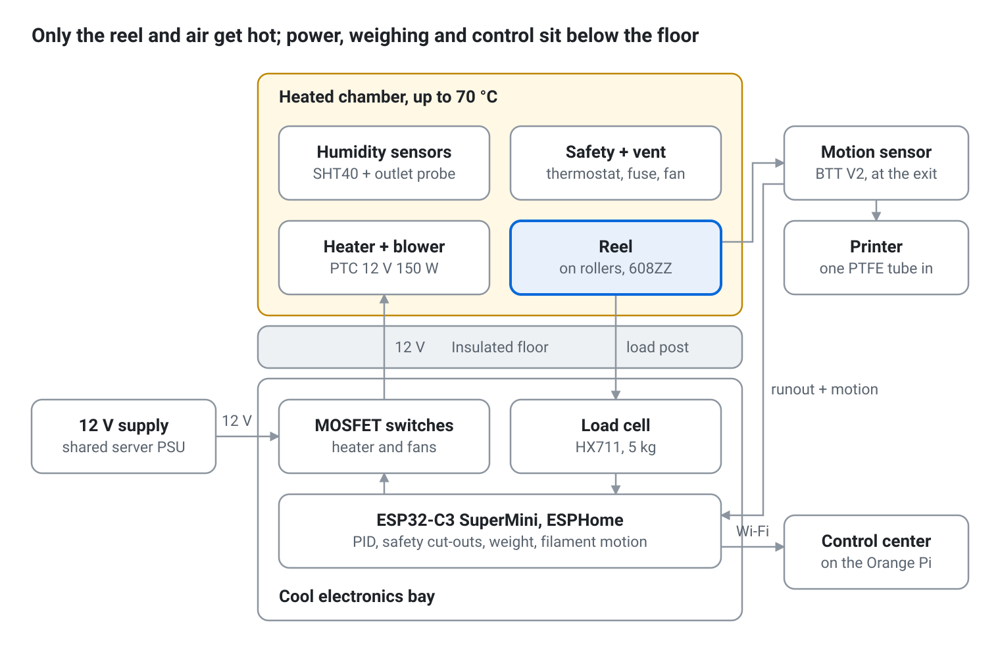
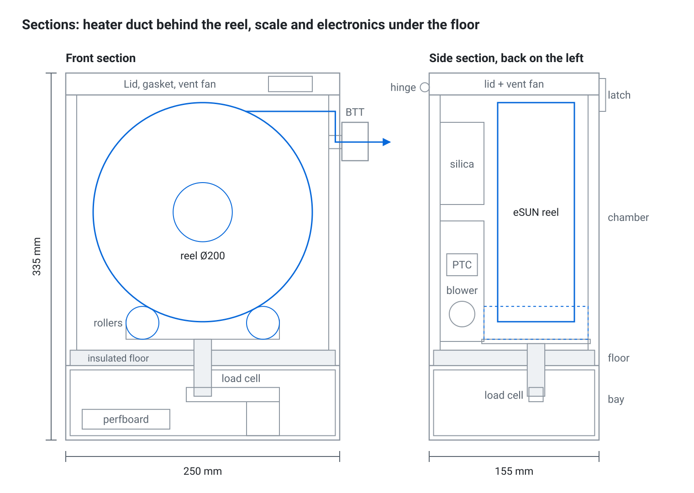
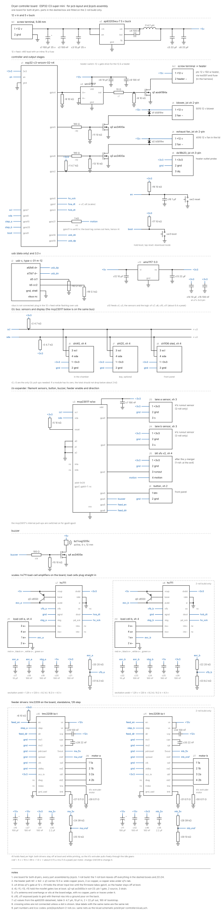

One top-loading, single-reel dryer box per printer, printed in ABS/ASA. The reel drops onto bearing rollers and a 12 V 150 W PTC heater holds 40-70 °C. A BIGTREETECH motion sensor at the exit checks the extruder is really pulling filament, and a JLCPCB-assembled controller board with an ESP32-C3 running ESPHome weighs the reel and reports to the Printer Control Center over Wi-Fi.
The single-reel box is the two-reel design without the second lane: no feeders, no I/O expander, one load cell. When a reel runs out, the printer pauses as it does today. It shares its heater, fans, sensors, controller and power feed with the two-reel box, so the two use the same spares.

| Dimension | Value | Why |
|---|---|---|
| Chamber inside (L × W × H) | 230 × 135 × 235 mm | Ø200 reel + 15 mm clearance; 95 mm for the reel and a 40 mm heater duct at the back |
| Electronics bay inside height | 60 mm | Controller board, load cell |
| Outside | 250 × 155 × 335 mm | 4 mm walls + 6 mm insulation; the motion sensor sits on the right wall |
| Roller centres | 110 mm apart, 25 mm above the floor | Reel sits stable with about 35° contact angle each side |
| Roller length | 95 mm | Any reel 50-90 mm wide |

Roller cradle. Two rollers, each a printed ABS sleeve (30 mm OD) with a 608ZZ bearing pressed into each end, turning on a fixed M8 stainless bolt. A printed front lip stops the reel walking off.
Weighing path. The cradle stands on a Ø16 mm ABS post through a 24 mm hole in the insulated floor to the free end of a 5 kg load cell. A skirt on the cradle overlaps a collar round the hole without touching it, and printed hard stops protect the cell from a dropped reel.
Filament path. The filament leaves through a PC4-M10 bulkhead high in the right wall, straight into the BTT motion sensor in a small printed holder, then one 2 × 4 mm PTFE tube runs to the printer.
Lid, insulation, desiccant. Hinged lid with two stainless toggle latches and a silicone D-seal; 6 mm foil-faced NBR foam on the walls; a snap-in cassette with about 150 g of indicating silica gel.
| Part | Qty | Approx. filament | Printer | Notes |
|---|---|---|---|---|
| Chamber tub | 1 | 380 g | K2 Plus | Too big for the K1C bed |
| Lid (+ window frame) | 1 | 140 g | K2 Plus | Hinge knuckles and latch mounts |
| Base / electronics bay | 1 | 200 g | K2 Plus | Vents, front panel, XT60 cut-out |
| Insulated floor plate | 1 | 60 g | K1C | Collar for the load post |
| Roller cradle | 1 | 60 g | K1C | Holds both M8 axles |
| Roller sleeves | 2 | 15 g each | K1C | 608ZZ pressed into both ends |
| Load post + mount block | 1 set | 25 g | K1C | Print the post solid |
| Heater duct + blower mount | 1 | 40 g | K1C | At least 15 mm between ABS and the PTC fins |
| Desiccant cassette | 1 | 30 g | K1C | Perforated face |
| Motion sensor holder | 1 | 20 g | K1C | Bolts to the right wall at the exit |
| Electronics tray + front panel | 1 | 40 g | K1C | Controller board, OLED, button |
Same as the two-reel box: a PID loop drives the 12 V 150 W PTC heater (the same part, so one spare covers both versions; in the smaller chamber the PID simply runs it less). The 5015 blower pushes chamber air through the heater, and the 4010 fan vents moist air through a gravity flap while drying.
| Mode | Heater | Vent fan | Ends when |
|---|---|---|---|
| Dry | Material preset | 10 s every minute for the first hour, then every 5 min | Preset time is up, or humidity below 15% for 30 min after the minimum time; then Keep dry |
| Keep dry | Off; desiccant does the work | Off, flap shut | Humidity above 25% for 15 min starts a short 45 °C dry |
| Feed temperature (PLA 40 °C, others 45-50 °C) | Off | The linked printer stops printing (+30 min) |
Safety chain: firmware cut-outs (chamber over setpoint + 8 °C or 75 °C, heater outlet over 100 °C, missing sensor, no temperature rise, 24 h limit), a KSD301 85 °C 16 A thermostat and a 92 °C 15 A thermal fuse in series with the heater, a self-limiting PTC, and a 15 A fuse on the box's 12 V input.
grams_left = cradle_g − empty_reel_g
metres_left = grams_left / (density_g_per_cm3 × 2.405)
Calibrate once: tare the empty cradle, put the 500 g calibration weight on and enter its grams, then save an empty eSUN 1 kg reel as a reel profile. The BTT sensor adds the length of filament actually pulled through, so the control center can compare it with what Klipper extruded.

Every part is assembled by JLCPCB, so nothing plugs into the board but the harness. A USB-C port (data only: plug in the 12 V feed while flashing) loads the first firmware; updates after that go over Wi-Fi. The load cell's own four leads crimp straight into J11. On this board the BTT runout switch, the button and the buzzer go through the MCP23017.
| GPIO | Use | Notes |
|---|---|---|
| 0 | HX711 SCK (U7) | |
| 1 | HX711 DOUT (U7) | |
| 2 | DS18B20 1-wire | Strapping pin; the 4.7 kΩ pull-up keeps it high at boot |
| 3, 10, 20 | Unused on the 1-roll | Second scale and feeder STEP lines, not fitted |
| 4 | Heater gate driver input (UCC27517) | 10 kΩ pull-down: heater off while booting |
| 5 | Blower MOSFET gate | 100 Ω series + 10 kΩ pull-down: off while booting |
| 6 | Exhaust fan MOSFET gate | Same as GPIO 5 |
| 7 | I2C SCL | Chamber SHT40 (sensor board SB1, 0x44), bay SHT40 (on the board, 0x45), OLED, MCP23017 |
| 8 | I2C SDA | Strapping pin; the I2C pull-up keeps it high |
| 9 | BOOT button | 10 kΩ pull-up; not used by the firmware |
| 18, 19 | USB D−, D+ | USB-C for flashing and logs |
| 21 | BTT motion output | Through 1 kΩ, because the boot log comes out here; ESPHome counts the pulses |
| MCP23017 | Use | Notes |
|---|---|---|
| GPA2 | Runout switch of the BTT SFS V2 | Internal pull-up |
| GPA3 | Push button | Internal pull-up |
| GPA4 | Buzzer (through an AO3400A) | |
| GPA0, GPA1, GPA5, GPA6 | Unused on the 1-roll | Lane sensors and feeder EN/DIR |
The physical harness: every cable from its connector on the controller board to the part, with wire colours and gauges. Use one colour per job throughout (the 6-colour 22 AWG silicone set covers it), so a cable can be traced at a glance. Crimp JST-XH 2.54 mm connectors on every cable that goes to a sensor, fan or motor, so parts can be swapped without soldering.

About US${{BOM_PER_BOX}} per box, plus about US${{BOM_SHARED}} once for the shared supply's wiring (not needed again if the two-reel boxes already use it). Prices are approximate; search terms are what to type into AliExpress. Also available as bom.csv.
{{BOM_TABLES}}ESPHome on the box; the Printer Control Center links the box to its printer and shows the reel on that printer's card. The safety rules run on the ESP32 itself.
| Rule | When | Alert |
|---|---|---|
| Filament not moving | Printing, and Klipper's filament_used rises 15 mm or more while the BTT sensor measures no movement | Pause + critical push (clog, jam, tangle or stuck reel end) |
| Not enough filament | The file needs more than the reel holds, + 5% | Warning push |
| Running out | Reel under 30 g | Warning with the estimated time |
| Runout | The printer reports a runout | The existing runout reminders |
| Desiccant spent | Keep dry and humidity above 30% for 1 h | Warning |
| Dryer fault | Any firmware safety cut-out | Critical push |
| Print mode | Linked printer starts printing | No push; Print mode until 30 min after the print |